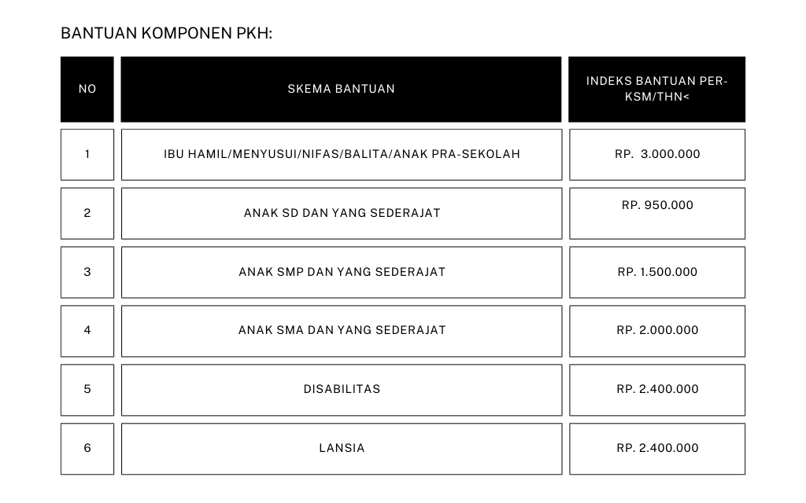

PENGETAHUAN TENTANG PKH
PKH
Program Keluarga Harapan yang selanjutnya disebut PKH adalah program pemberian bantuan sosial bersyarat kepada Keluarga Miskin (KM) yang ditetapkan sebagai keluarga penerima manfaat PKH. Sebagai upaya percepatan penanggulangan kemiskinan, sejak tahun 2007 Pemerintah Indonesia telah melaksanakan PKH. ProgramPerlindungan Sosial yang juga dikenal di dunia internasional dengan istilah Conditional Cash Transfers (CCT) ini terbukti cukup berhasil dalam menanggulangi kemiskinan yang dihadapi di negara-negara tersebut, terutama masalah kemiskinan kronis Sebagai sebuah program bantuan sosial bersyarat, PKH membuka akses keluarga miskin terutama ibu hamil dan anak untuk memanfaatkan berbagai fasilitas layanan kesehatan (faskes) dan fasilitas layanan pendidikan (fasdik) yang tersedia di sekitar mereka. Manfaat PKH juga mulai didorong untuk mencakup penyandang disabilitas dan lanjut usia dengan mempertahankan taraf kesejahteraan sosialnya sesuai dengan amanat konstitusi dan Nawacita Presiden RI.
Melalui PKH, KM didorong untuk memiliki akses dan memanfaatkan pelayanan sosial dasar kesehatan, pendidikan, pangan dan gizi,perawatan, dan pendampingan, termasuk akses terhadap berbagai program perlindungan sosial lainnya yang merupakan program komplementer secara berkelanjutan. PKH diarahkan untuk menjadi episentrum dan center of excellence penanggulangan kemiskinan yang mensinergikan berbagai program perlindungan dan pemberdayaan sosial nasional.
Misi besar PKH untuk menurunkan kemiskinan semakin mengemuka mengingat jumlah penduduk miskin Indonesia sampai pada Maret tahun 2016 masih sebesar 10,86% dari total penduduk atau 28,01 juta jiwa (BPS, 2016). Pemerintah telah menetapkan target penurunan kemiskinan menjadi 7-8% pada tahun 2019, sebagaimana tertuang di dalam RPJMN 2015-2019. PKH diharapkan dapat berkontribusi secara signifikan untuk menurunkan jumlah penduduk miskin, menurunkan kesenjangan (gini ratio) seraya meningkatkan Indeks Pembangunan Manusia (IPM).
Apa tujuan PKH?
Tujuan umum PKH adalah untuk meningkatkan kualitas sumber
daya manusia, mengubah perilaku peserta PKH yang kurang
mendukung upaya peningkatan kesejahteraan, brdan memutus
mata rantai kemiskinan antar generasi
Secara khusus tujuan PKH adalah sebagai berikut:
- Meningkatkan kualitas kesehatan KSM
- Meningkatkan taraf pendidikan anak-anak KSM
- Meningkatkan akses dan kualitas pelayanan pendidikan dan
kesehatan, khususnya bagi anak-anak KSM
Dengan tujuan khusus tersebut diharapkan dapat meningkatkan
Indeks Pembangunan Manusia (IPM) bagi peserta PKH.
Siapa yang berhak menerima bantuan PKH?
Penerima bantuan PKH adalah Keluarga Sangat Miskin (KSM)
peserta PKH yang memiliki satu atau beberapa komponen PKH,
yaitu :
- Ibu hamil/ibu nifas/anak balita
- Anak berusia kurang dari 7 tahun yang belum masuk
Buku Kerja Pendamping dan Operator | PKH 4
pendidikan dasar (anak pra-sekolah)
- Anak usia 7-21 tahun yang belum menyelesaikan pendidikan
wajib belajar 12 tahun
- Anak penyandang disabilitas berusia 0-21 tahun.
Berapa Indeks Bantuan PKH?
Indeks dan komponen bantuan PKH tahun 2015 ditetapkan sesuai tabel berikut :

Catatan : Bantuan komponen kesehatan tidak dihitung berdasarkan jumlah anak balita tetapi menjadi satu paket dengan ibu hamil/nifas.